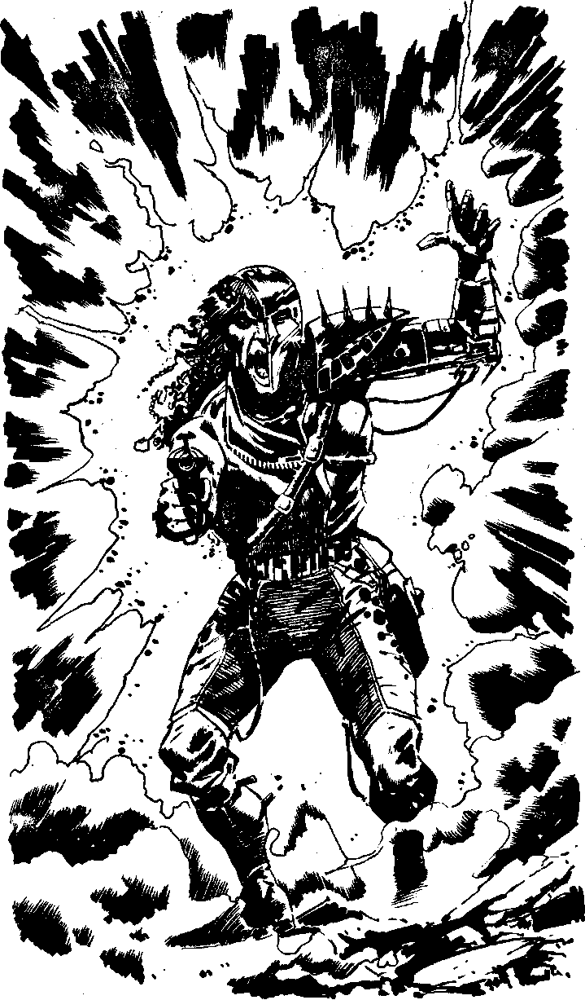

181
You move quickly out to the back of the mining droid, where the conveyor belt has delivered about a hundred rods of pure Polybdenum onto a plasteel rack. There are no more wardroids to be seen. Three badly corroded loading droids stand motionless, ignoring you. You play your blaster across the rods and they glow red and begin to react with the chlorine in the Thrixian atmosphere, becoming a useless crumbling compound Carborundum thinks into your mind, thanking you for saving its life. He tells you that he was named after a form of carbon because he is considered unusual by the silicon Thrix, but that he is privileged to have contacted so unusual a being as you. He asks if you will become his silica-clone, and as this is apparently a great honour, you accept. Before you ask what a silica-clone is a machine shaped like a flying beetle appears in the yellow mist before you. A red light shines on its belly and a form glides to the ground on a disc of metal. With a shock you realise that it is a huge Time Machine and the form is that of the arch villain Agidy Yelov. A field of orange energy crackles around him. It seems he has stolen the force-field technology of the Creche. He is able to stand unprotected on Thrix, inside the defensive shield. Seeing you and the destroyed Polybdenum he screams with rage. The half of his face which you can see twists in a spasm and his robot arm twitches. In the wisps of yellow fog he looks like a foul demon from the blackest hell. He. shouts, 'I thought I had erased you from existence at the battle of Crecy. Falcon. You've meddled with my plans once again, but you cannot stop me this time, I have the most deadly arsenal the universe will ever know ready to obey my every command. I shall re-program every droid, Falcon, so that your death which is imminent will be as slow and painful as the technology of Mechanon can devise.' Just then two wardroids appear above the mining complex and, as you look up, Yelov draws his blaster. Carborundum sets up a keening wail which seems to disturb Yelov's force shield. He starts to choke as the deadly gas reaches his lungs and, stepping onto the disc, is sucked back up into the Time Machine, which winks out seconds later. Turn to 242.
Turn to 242